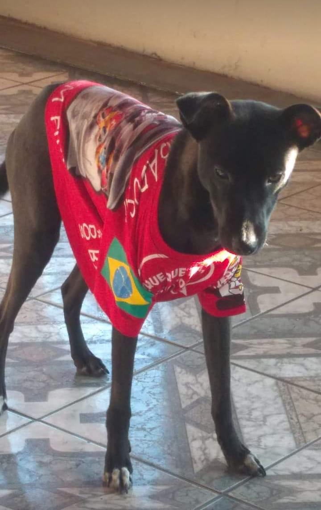
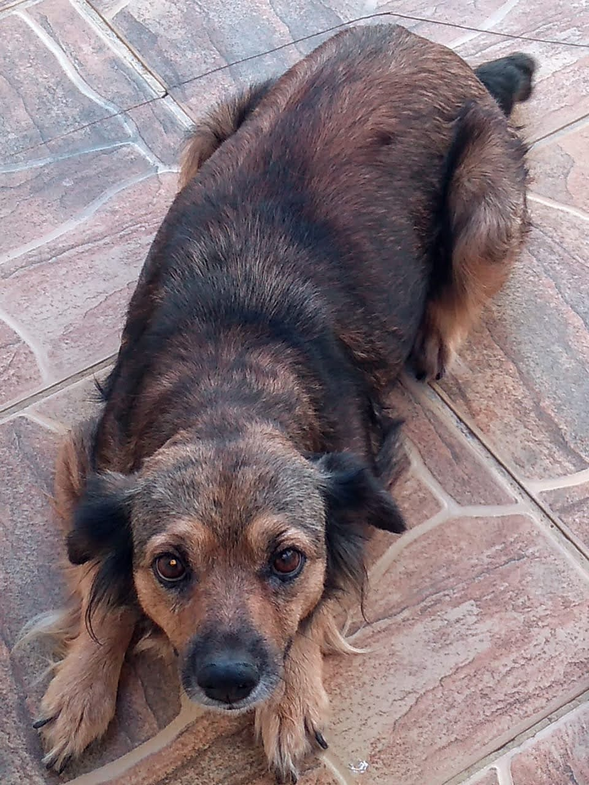

Durante a minha vida eu já tive muitos animais, entre eles teve um pintinho chamado "Pequeno Princípe", 5 cachorros chamados "Thor, Pretinha, Brilhante, Cristal, e por fim o Zé Ruela" ksksks. Eles me marcaram de uma forma inexplicável, porém todos os animais tendem a morrer primeiro do que seus donos, com isso, ao passar do tempo eles foram me deixando e novos intrometidos apareceram simplesmente do nada. Esses novos habitantes foram encontrados na porta de minha casa abandonados, e como não resisto a filhotinhos tão fofos eu e minha família os acolhemos e nomeamos de Thor e Uisk.
Um cachorro meio doidinho desde filhote, o encontrei quando o mesmo estava correndo desesperado atrás de sua mãe, ele era o único macho entre as 7 irmãs e fomos premiados justamente com ele. No primeiro dia parecia um anjo, somente ficava deitado tranquilamente, porém no outro dia já "tacou" o terror comendo tudo o que vinha pela frente. Seu nome é originado do primeiro cachorro que minha mãe teve, suas personalidades eram extremamente parecidas por isto decidimos fazer essa homenagem. Apesar de tudo é um cachorro muito carinhoso que adora brincar, só que ele morde quem não reconhece que é da família.
Uma cachorrinha muito tranquila que já me deu muito trabalho no passado, foi encontrada debaixo do caminhão de meu pai abandonada, logo de cara ela não demonstrou nenhum perigo sendo extremamente dócil e educada. Seu nome foi dado pelo meu irmão e se refere a uma bebida alcóolica por mais estranho que seja, ela ama ficar perto de todos e receber carinho a todo momento. Só terá que tomar cuidado pois se a Uisk se apegar a você te seguirá para onde for. Sendo tão amável facilmente quem a vê se apaixona.
Desenvolvido por Sukita - 2021